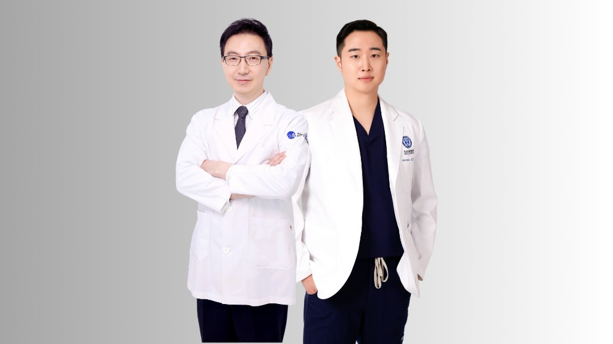
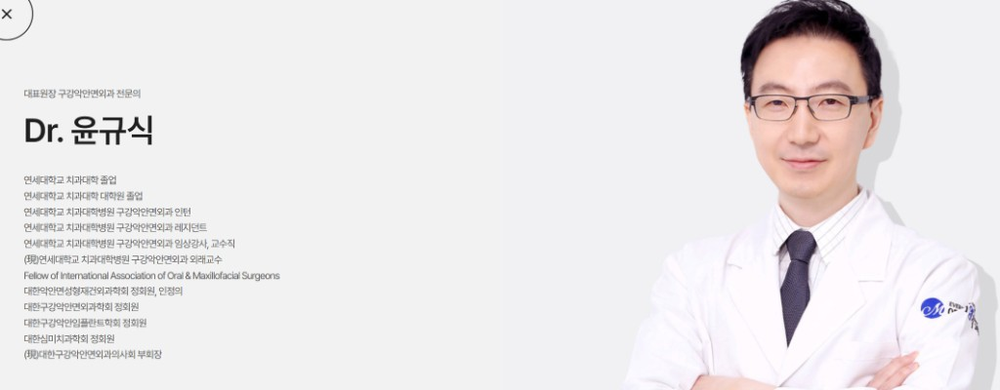
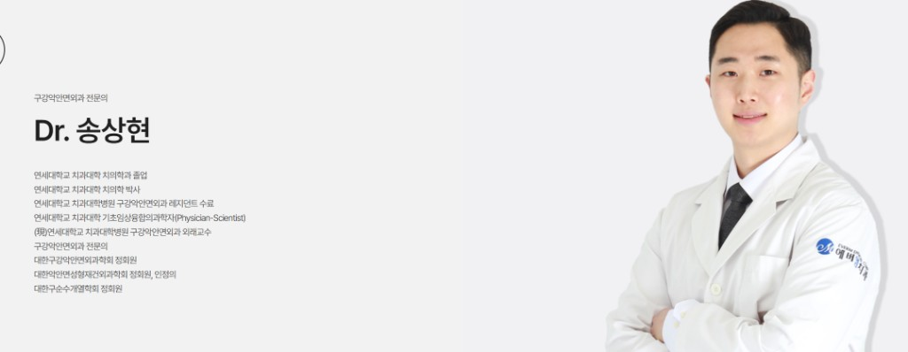

K-양악 세계가 찾는 에버엠 — ไทย·เกาหลี
ความร่วมมือระดับโลกเพื่อศัลยกรรมขากรรไกรและโครงหน้า
ศัลยกรรมโครงหน้า · ขากรรไกร · ทันตกรรมเฉพาะทาง
EVERM Surgery Clinic มุ่งเน้นการแก้ไขโครงใบหน้าและขากรรไกรอย่างปลอดภัย โดยทีมศัลยแพทย์ช่องปากและแม็กซิลโลเฟเชียล ผสานการวินิจฉัย 3D และแผนการรักษาเฉพาะบุคคล

เราไม่ได้มองเพียงแค่ “ฟันสวย” แต่ให้ความสำคัญกับสมดุลของโหนกแก้ม คาง ขากรรไกร และท่อหายใจ เพื่อผลลัพธ์ที่ดูเป็นธรรมชาติและใช้งานได้จริงในระยะยาว
วิเคราะห์โครงสร้างใบหน้า ฟัน และข้อต่อขากรรไกรร่วมกัน ไม่แยกส่วน
ออกแบบการผ่าตัดด้วยซอฟต์แวร์ 3D และเทมเพลตผ่าตัดแบบคอมพิวเตอร์
ติดตามอาการบวม การสบฟัน และการฟื้นตัวอย่างใกล้ชิดหลังผ่าตัด

“เป้าหมายของเราคือใบหน้าที่กลมกลืนกับบุคลิกภาพของคุณ ไม่ใช่แค่เปลี่ยนรูปทรง”— ทีมศัลยแพทย์ช่องปาก EVERM
วิดีโอ
ภาพรวมความร่วมมือระดับนานาชาติและบรรยากาศของคลินิก
ความร่วมมือระดับโลกเพื่อศัลยกรรมขากรรไกรและโครงหน้า
วิดีโอแนะนำคลินิกและมาตรฐานการดูแล
บริการหลัก
ครอบคลุมตั้งแต่การปรึกษา วางแผน 3D ไปจนถึงการผ่าตัดและติดตามผล
แก้ปัญหาคางยื่น คางสั้น หรือการสบฟันผิดปกติรุนแรง ร่วมกับแผนจัดฟันตามความจำเป็น
ปรับมุมใบหน้าให้ดูอ่อนลงหรือเรียวขึ้น โดยคำนึงถึงเส้นประสาทและสมดุลใบหน้า
สอบถามรายละเอียดลดความกว้างของมุมกรามสำหรับใบหน้าทรง V-line อย่างปลอดภัยภายใต้การวางแผน 3D
สอบถามรายละเอียดแก้ไขใบหน้าที่ดูยาวหรือมีสันโหนกเด่นชัด ให้สัดส่วนดูกลมกลืนขึ้น
สอบถามรายละเอียดปรับปลายคางด้วยการผ่าตัดหรือรากเทียมตามแผนร่วมกับศัลยแพทย์ช่องปาก
สอบถามรายละเอียดแพ็กเกจครบวงจรสำหรับเคสสบฟันซับซ้อน ตั้งแต่จัดฟันจนถึงผ่าตัดและรักษาเสร็จสิ้น
สอบถามรายละเอียดเทคโนโลยี
เรานำ CBCT, สแกนฟันดิจิทัล และซอฟต์แวร์จำลองการผ่าตัดมาใช้ร่วมกัน เพื่อให้คุณเข้าใจแผนการรักษาก่อนตัดสินใจ

ประเมินโครงกระดูก ข้อต่อ TMJ และท่อหายใจอย่างละเอียด
จำลองการเคลื่อนกระดูกและรูปทรงใบหน้าหลังผ่าตัด
เทมเพลตและไกด์ช่วยให้การผ่าตัดแม่นยำตามแผน
ประสานการสบฟันและรอยยิ้มหลังศัลยกรรมขากรรไกร
สถานที่และสิ่งอำนวยความสะดวก
พื้นที่สะอาด ทันสมัย และออกแบบเพื่อความปลอดภัยของผู้ป่วยศัลยกรรมโครงหน้า


ขั้นตอนการรักษา
พูดคุยความต้องการ ตรวจช่องปาก ถ่ายภาพ และสแกน 3D ตามความจำเป็น
ศัลยแพทย์ช่องปาก ทันตแพทย์จัดฟัน และทีมเวชระเบียนร่วมออกแบบแผน
อธิบายขั้นตอน ความเสี่ยง ระยะเวลาพักฟื้น และค่าใช้จ่ายอย่างโปร่งใส
ดำเนินการภายใต้วิสัญญีและทีมพยาบาลเฉพาะทาง
นัดตรวจติดตามอาการบวม การสบฟัน และการดูแลที่บ้านอย่างต่อเนื่อง
ทีมแพทย์
ประสบการณ์เคสซับซ้อน ทั้งในประเทศและต่างประเทศ


대표원장
구강악안면외과 전문의

전문의
구강악안면외과 전문의
ไฮไลท์สถานที่
ตั้งแต่ห้องปรึกษา ห้องรักษา ไปจนถึงห้องผ่าตัดและพักฟื้น
อุปกรณ์ครบครัน ระบบแสงส่องสว่างและวิสัญญี
ยูนิตทันสมัย สะอาด และออกแบบเพื่อความสบาย
ดูแลใกล้ชิดหลังศัลยกรรมโครงหน้า
เสียงจากผู้ป่วย
คำถามที่พบบ่อย
หากมีคำถามเพิ่มเติม ติดต่อทีมงานได้ตลอดเวลาทำการ
ผู้ที่มีปัญหาคางยื่น/สั้น กรามใหญ่ สบฟันผิดปกติ หรือใบหน้าไม่สมดุลจากโครงกระดูก และผ่านการประเมินสุขภาพจากแพทย์แล้ว
ขึ้นอยู่กับขอบเขตการผ่าตัด โดยทั่วไปบวมชัด 1–2 สัปดาห์แรก และค่อยๆ ดีขึ้นใน 4–8 สัปดาห์ ทีมแพทย์จะให้แนวทางเฉพาะบุคคล
เคสที่เกี่ยวกับการสบฟันมักต้องจัดฟันก่อนและ/หลังผ่าตัด ส่วนเคสตัดกรามหรือโหนกแก้มอย่างเดียวอาจไม่จำเป็น ขึ้นกับการวินิจฉัย
มีทีมงานสื่อสารภาษาเกาหลี อังกฤษ และไทย ช่วยนัดหมาย เอกสาร และคำแนะนำหลังผ่าตัด
กรอกแบบฟอร์มด้านล่าง โทร 02-540-8275 หรือ Line — เจ้าหน้าที่จะติดต่อกลับภายใน 24 ชม.
ติดต่อเรา